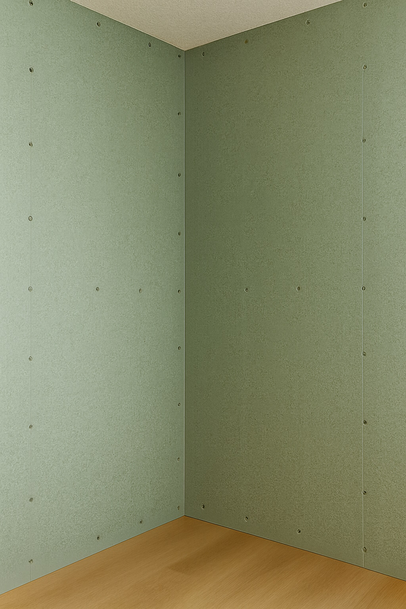
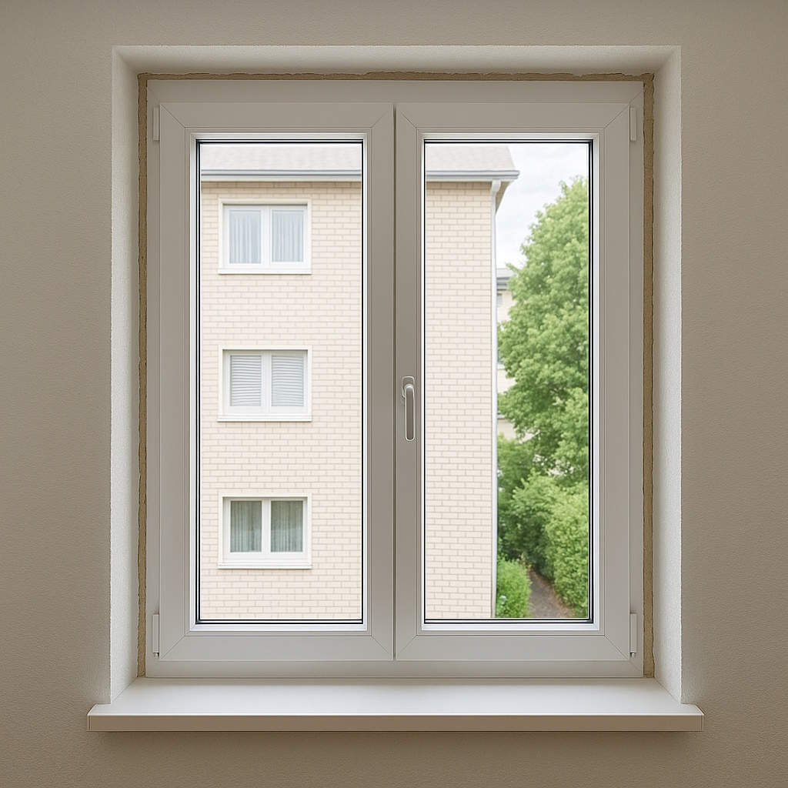
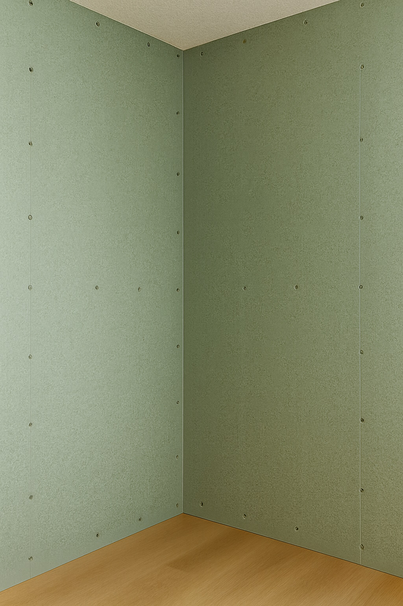
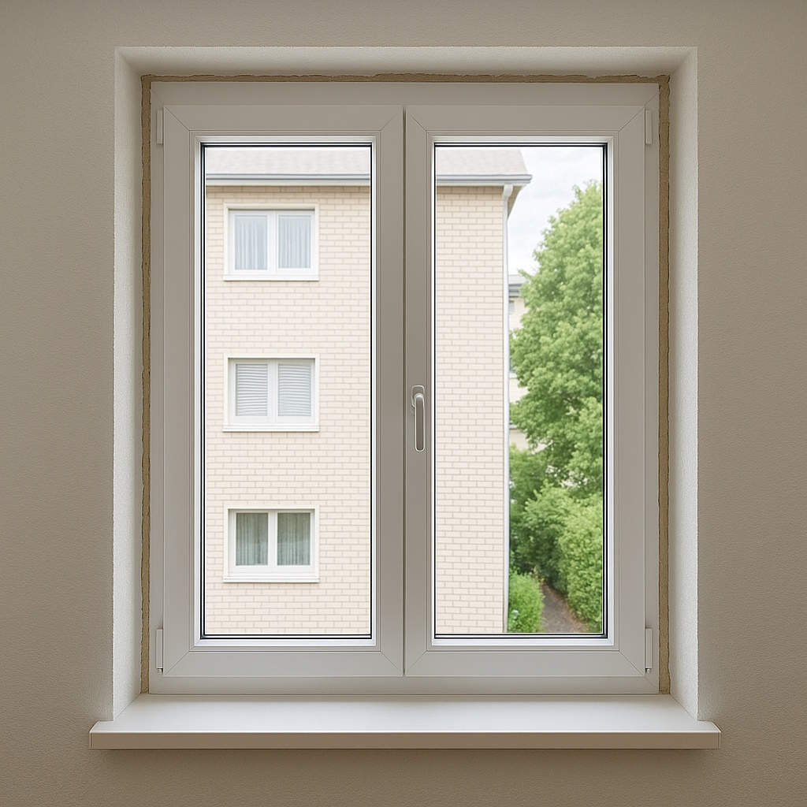

Montage & kleine Umbauten
Montage von Türen, Trennwänden, Trockenbauelementen und kleineren Umbauten im Innenbereich. Wir unterstützen bei praktischen Anpassungen der Räume – zum Beispiel neue Türöffnungen, abgetrennte Bereiche oder zusätzliche Stauraumlösungen.
Auf Wunsch übernehmen wir Demontage bestehender Bauteile, Einbau neuer Elemente, Anpassung von Anschlüssen sowie das Schliessen und Spachteln der betroffenen Bereiche – damit alles wieder wie aus einem Guss aussieht.
Bilder zu kleinen Umbauten
 



Video zum Projekt (optional)
Falls es ein Vorher/Nachher-Video zu kleinen Umbauten gibt, können wir es hier einbinden. Ersetze einfach die ID im YouTube-Link unten.